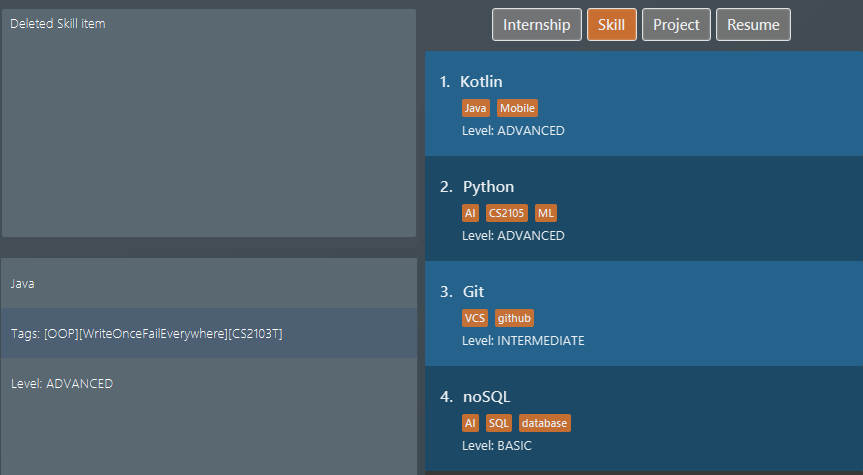

Overview
ResuMe is a desktop application to build and manage resumes. You can create resumes, add items to resumes, and generate them with a handful of commands. The majority of interactions are via the Command Line Inteface (CLI).
The project builds upon the code from Address Book Level 3 (AB3), a desktop Address Book application. ResuMe retains the characteristics of AB3 while also having its own uniqueness. It is truly remarkable.
The project is done as part of
This portfolio showcases my skills and contributions.
Summary of contributions
Enhancements implemented
-
Major enhancement:
-
Added the ability to undo/redo previous commands
-
What it does: allows the user to undo all previous commands one at a time. Preceding undo commands can be reverted using the redo command.
-
Justification: This feature improves the product significantly because a user can make mistakes in commands and the application should provide a convenient way to rectify them.
-
Highlights: This enhancement affects existing commands and commands to be added in future. It required an in-depth analysis of design alternatives. The implementation too was challenging as it required changes to existing commands.
-
-
Planned data encryption and log-in functionality
-
These changes will come in a later version and will allow user better security when using ResuMe.
-
-
-
Minor enhancement:
-
Added a sort function for items
-
What it does: allows the user to sort an item based criteria like name or time.
-
Justification: This feature improves the product significantly because a user can quickly sort the items with a single command.
-
Highlights: This enhancement affects existing commands and commands to be added in future. It required an in-depth analysis of design alternatives. The implementation too was challenging as it required changes to existing commands.
-
-
Contributions to documentation:
-
Updated README.
-
Updated application screenshots for the User Guide.
Contributions to the Developer Guide:
-
Update the section that covers
Storagecomponent and for the enhancements that I have made.
Contributions to team-based tasks:
-
Augmented codebase for
Storagecomponent from AddressBook Level 3 to accommodate substantially more item types.
Reviewing contributions:
-
PRs reviewed with non-trivial review comments.
-
Reported bugs and suggestions for other teams in the class.
Contributions to the User Guide
Given below are sections I contributed to the User Guide. They showcase my ability to write documentation targeting end-users. |
Deleting an item : delete
Deletes an existing item from the ResuMe application.
Format: delete INDEX i/ TYPE
|
Use list command to navigate to the correct list to ensure that 1) the item exists, and 2) you know the
correct index for deletion. Or just fall back on undo if you accidentally delete the wrong item.
|
Example:
-
Suppose we start with the following original list of
resumeitems, as seen using the commandlist i/ res. Pay attention to the secondresumeitem. Figure 1. List of all resume items
Figure 1. List of all resume items -
Delete the 2nd
resumewithdelete 2 i/ res. Figure 2. Application view after deleting the resume item at index 2
Figure 2. Application view after deleting the resume item at index 2 -
Delete the 3rd
skillwithdelete 3 i/ ski. Do note how it is not a must for the list box to displayskillitems for deletion to proceed. After the deletion the list box is set to showskillitems. Figure 3. Application view after deleteing the skill item at index 3
Figure 3. Application view after deleteing the skill item at index 3
Undoing a command: undo
Undoes the previous command and restores the state of the application to before that command is performed.
Format: undo
|
Example:
-
Suppose we hate Java and therefore want to delete it from the list of
skillitems using adelete 1 i/ skicommand. We also do alist i/ projto switch to viewing projects because that is how staging for an example works.Figure 4. List of all skill items after deleting "Java" Figure 5. List of all project items
Figure 5. List of all project items -
But Stockholm’s syndrome kicks in and we decide that Java has its merits, so we revert our action with
undo. Voila, Java is back, and our list box now displaysskillitems. Figure 6. List of all skill items after undo
Figure 6. List of all skill items after undo
Redoing a command: redo
Redoes the most recent undone command and brings the application state to after the (re)execution of that command.
Format: redo
|
Example:
After the Java deletion incidence in the previous example section (for undo), we
decide that the merits of Java do not warrant the pain it wreaks so we want to redo our original decision to delete
Java. Once again, Java is removed from our life.
Contributions to the Developer Guide
Given below are sections I contributed to the Developer Guide. They showcase my ability to write technical documentation and the technical depth of my contributions to the project. |
include::../DeveloperGuide.adoc
include::../DeveloperGuide.adoc